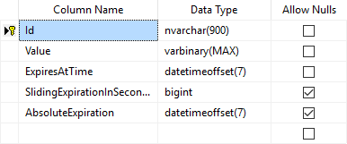

Working with a Distributed Cache¶
By Steve Smith
Distributed caches can improve the performance and scalability of ASP.NET Core apps, especially when hosted in a cloud or server farm environment. This article explains how to work with ASP.NET Core’s built-in distributed cache abstractions and implementations.
Sections:
What is a Distributed Cache¶
A distributed cache is shared by multiple app servers (see Caching Basics). The information in the cache is not stored in the memory of individual web servers, and the cached data is available to all of the app’s servers. This provides several advantages:
- Cached data is coherent on all web servers. Users don’t see different results depending on which web server handles their request
- Cached data survives web server restarts and deployments. Individual web servers can be removed or added without impacting the cache.
- The source data store has fewer requests made to it (than with multiple in-memory caches or no cache at all).
Note
If using a SQL Server Distributed Cache, some of these advantages are only true if a separate database instance is used for the cache than for the app’s source data.
Like any cache, a distributed cache can dramatically improve an app’s responsiveness, since typically data can be retrieved from the cache much faster than from a relational database (or web service).
Cache configuration is implementation specific. This article describes how to configure both Redis and SQL Server distributed caches. Regardless of which implementation is selected, the app interacts with the cache using a common IDistributedCache interface.
The IDistributedCache Interface¶
The IDistributedCache interface includes synchronous and asynchronous methods. The interface allows items to be added, retrieved, and removed from the distributed cache implementation. The IDistributedCache interface includes the following methods:
- Get, GetAsync
- Takes a string key and retrieves a cached item as a
byte[]if found in the cache. - Set, SetAsync
- Adds an item (as
byte[]) to the cache using a string key. - Refresh, RefreshAsync
- Refreshes an item in the cache based on its key, resetting its sliding expiration timeout (if any).
- Remove, RemoveAsync
- Removes a cache entry based on its key.
To use the IDistributedCache interface:
- Specify the dependencies needed in project.json.
- Configure the specific implementation of IDistributedCache in your
Startupclass’sConfigureServicesmethod, and add it to the container there.- From the app’s Middleware or MVC controller classes, request an instance of IDistributedCache from the constructor. The instance will be provided by Dependency Injection (DI).
Note
There is no need to use a Singleton or Scoped lifetime for IDistributedCache instances (at least for the built-in implementations). You can also create an instance wherever you might need one (instead of using Dependency Injection), but this can make your code harder to test, and violates the Explicit Dependencies Principle.
The following example shows how to use an instance of IDistributedCache in a simple middleware component:
1 2 3 4 5 6 7 8 9 10 11 12 13 14 15 16 17 18 19 20 21 22 23 24 25 26 27 28 29 30 31 32 33 34 35 36 37 38 39 40 41 42 43 44 45 | using System.Threading.Tasks;
using Microsoft.AspNet.Builder;
using Microsoft.AspNet.Http;
using Microsoft.Extensions.Caching.Distributed;
using System.Text;
namespace DistCacheSample
{
// You may need to install the Microsoft.AspNet.Http.Abstractions package into your project
public class StartTimeHeader
{
private readonly RequestDelegate _next;
private readonly IDistributedCache _cache;
public StartTimeHeader(RequestDelegate next,
IDistributedCache cache)
{
_next = next;
_cache = cache;
}
public async Task Invoke(HttpContext httpContext)
{
string startTimeString = "Not found.";
var value = await _cache.GetAsync("lastServerStartTime");
if (value != null)
{
startTimeString = Encoding.UTF8.GetString(value);
}
httpContext.Response.Headers.Append("Last-Server-Start-Time", startTimeString);
await _next.Invoke(httpContext);
}
}
// Extension method used to add the middleware to the HTTP request pipeline.
public static class StartTimeHeaderExtensions
{
public static IApplicationBuilder UseStartTimeHeader(this IApplicationBuilder builder)
{
return builder.UseMiddleware<StartTimeHeader>();
}
}
}
|
In the code above, the cached value is read, but never written. In this sample, the value is only set when a server starts up, and doesn’t change. In a multi-server scenario, the most recent server to start will overwrite any previous values that were set by other servers. The Get and Set methods use the byte[] type. Therefore, the string value must be converted using Encoding.UTF8.GetString (for Get) and Encoding.UTF8.GetBytes (for Set).
The following code from Startup.cs shows the value being set:
1 2 3 4 5 6 7 8 9 10 | public void Configure(IApplicationBuilder app,
IDistributedCache cache)
{
app.UseIISPlatformHandler();
var serverStartTimeString = DateTime.Now.ToString();
byte[] val = Encoding.UTF8.GetBytes(serverStartTimeString);
cache.Set("lastServerStartTime", val);
app.UseStartTimeHeader();
|
Note
Since IDistributedCache is configured in the ConfigureServices method, it is available to the Configure method as a parameter. Adding it as a parameter will allow the configured instance to be provided through DI.
Using a Redis Distributed Cache¶
Redis is an open source in-memory data store, which is often used as a distributed cache. You can use it locally, and you can configure an Azure Redis Cache for your Azure-hosted ASP.NET Core apps. Your ASP.NET Core app configures the cache implementation using a RedisDistributedCache instance.
You configure the Redis implementation in ConfigureServices and access it in your app code by requesting an instance of IDistributedCache (see the code above).
In the sample code, a RedisCache implementation is used when the server is configured for a Staging environment. Thus the ConfigureStagingServices method configures the RedisCache:
1 2 3 4 5 6 7 8 9 10 11 12 13 14 | /// <summary>
/// Use Redis Cache in Staging
/// </summary>
/// <param name="services"></param>
public void ConfigureStagingServices(IServiceCollection services)
{
// use Redis
services.AddSingleton<IDistributedCache>(serviceProvider =>
new RedisCache(new RedisCacheOptions
{
Configuration = "localhost",
InstanceName = "SampleInstance"
}));
}
|
Note
To install Redis on your local machine, install the chocolatey package http://chocolatey.org/packages/redis-64/ and run redis-server from a command prompt.
Using a SQL Server Distributed Cache¶
The SqlServerCache implementation allows the distributed cache to use a SQL Server database as its backing store. The installation script installs a table with the name you specify. The table will have the following schema:
Like all cache implementations, your app should get and set cache values using an instance of IDistributedCache, not a SqlServerCache. The sample implements SqlServerCache in the Production environment (so it is configured in ConfigureProductionServices).
1 2 3 4 5 6 7 8 9 10 11 12 13 14 15 | /// <summary>
/// Use SQL Server Cache in Production
/// </summary>
/// <param name="services"></param>
public void ConfigureProductionServices(IServiceCollection services)
{
// Use SQL Server
services.AddSingleton<IDistributedCache>(serviceProvider =>
new SqlServerCache(new CacheOptions(new SqlServerCacheOptions()
{
ConnectionString = @"Data Source=(localdb)\v11.0;Initial Catalog=DistCache;Integrated Security=True;",
SchemaName = "dbo",
TableName = "TestCache"
})));
}
|
Note
The ConnectionString (and optionally, SchemaName and TableName) should typically be stored outside of source control (such as UserSecrets), as they may contain credentials.
Recommendations¶
When deciding which implementation of IDistributedCache is right for your app, choose between Redis and SQL Server based on your existing infrastructure and environment, your performance requirements, and your team’s experience. If your team is more comfortable working with Redis, it’s an excellent choice. If your team prefers SQL Server, you can be confident in that implementation as well. Note that A traditional caching solution stores data in-memory which allows for fast retrieval of data. You should store commonly used data in a cache and store the entire data in a backend persistent store such as SQL Server or Azure Storage.
Redis Cache is a caching solution which gives you high throughput and low latency as compared to SQL Cache. Also, you should avoid using the in-memory implementation (MemoryCache) in multi-server environments.
Azure Resources:
Tip
The in-memory implementation of IDistributedCache should only be used for testing purposes or for applications that are hosted on just one server instance.